Durable copies of pieces I wrote or steered — customer stories, DAM systems writing, AI essays, and brand experiments. Each archive page includes a link to the live original when one exists (Hawk Ridge, Bynder, CMSWire, portfolio PDFs).
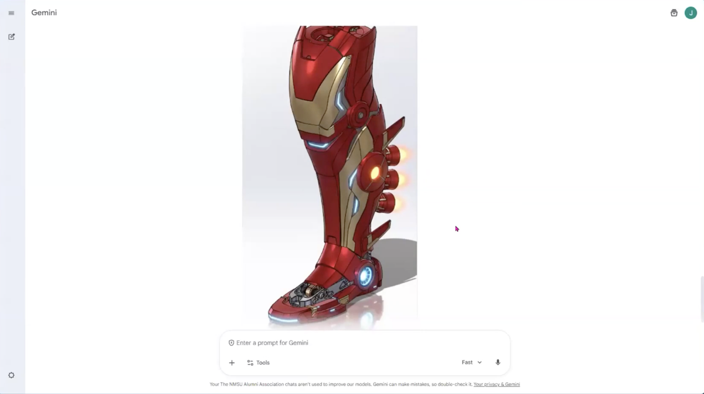
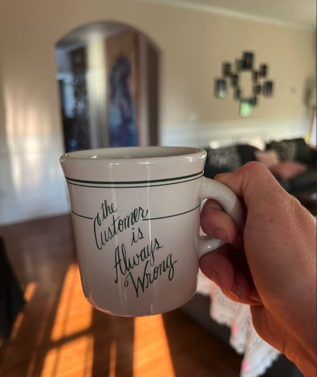
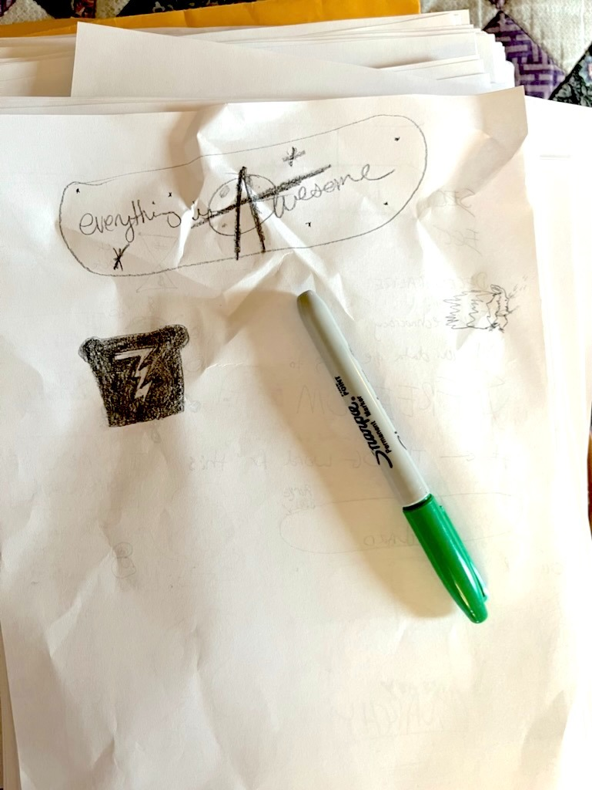
Engineers, programmers, PMs, and customers — shop-floor knowledge turned into readable stories and spotlights.
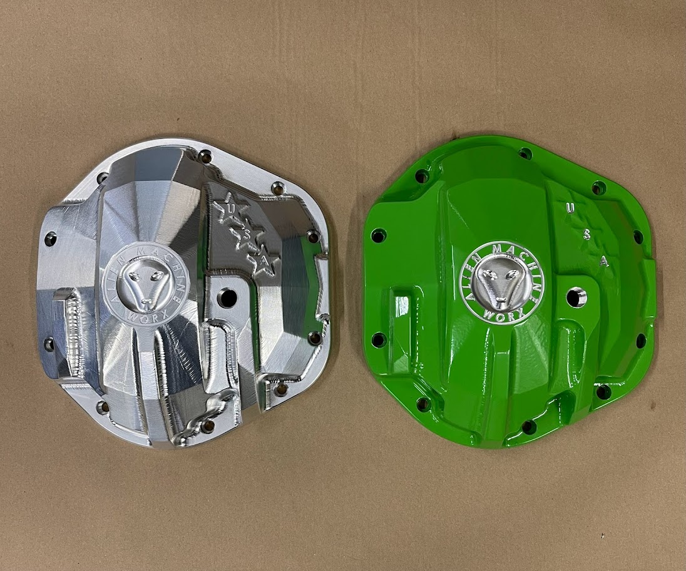
Where digital asset management is heading — cloud, AI metadata, creative automation, brand infrastructure.
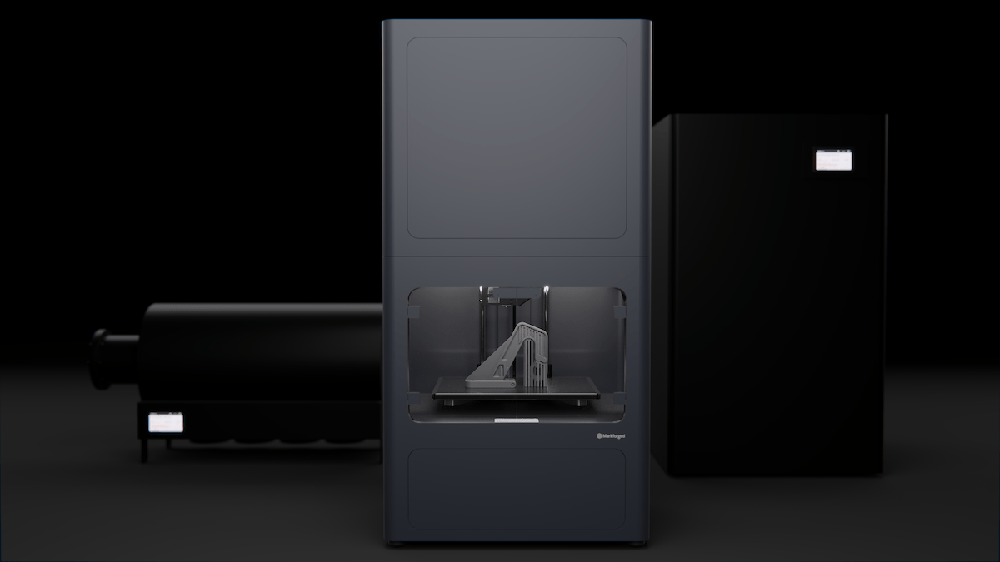
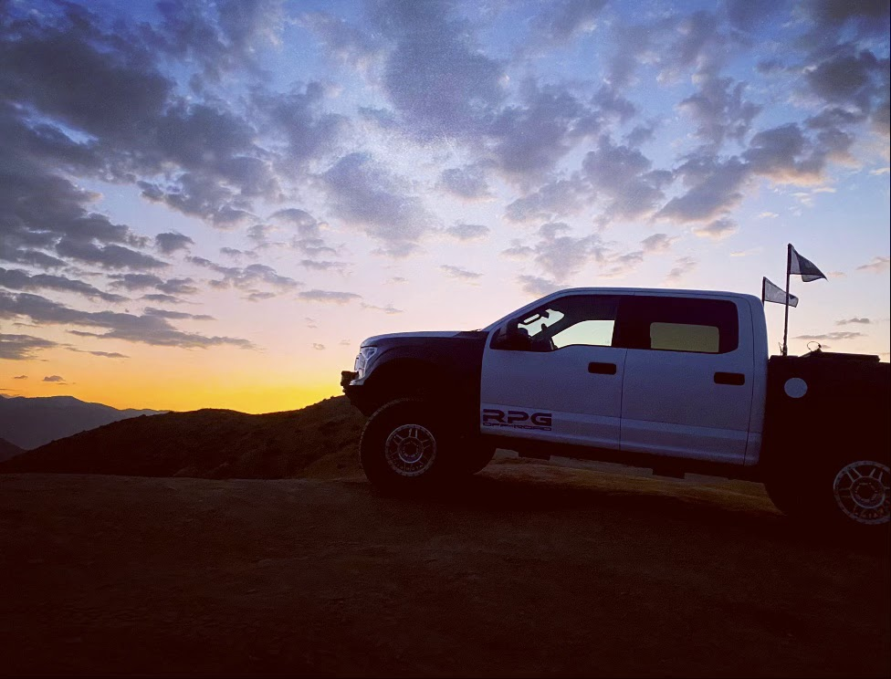
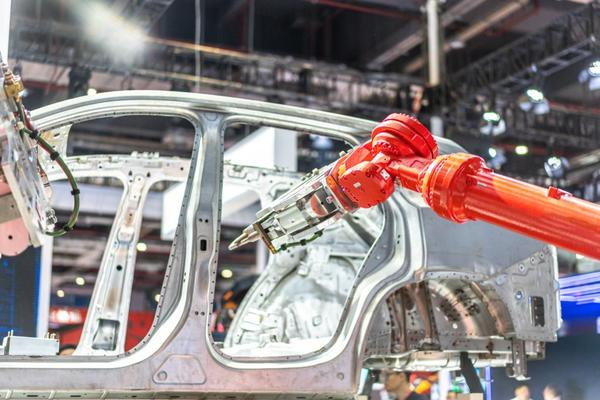
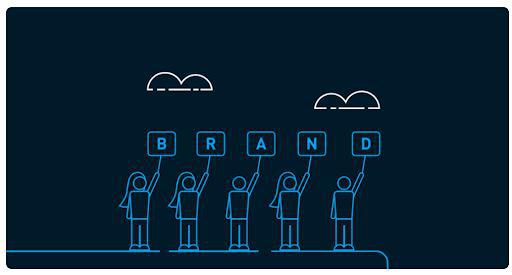
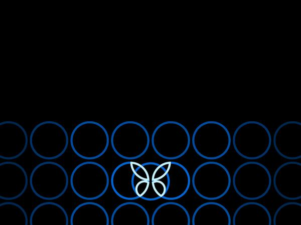
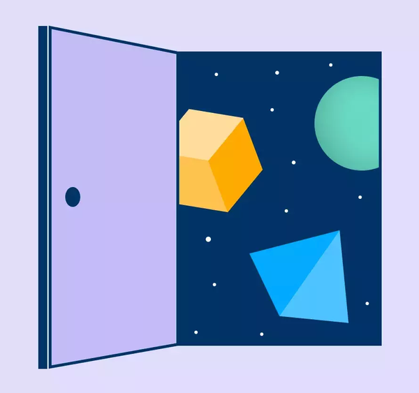
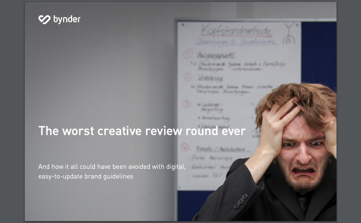
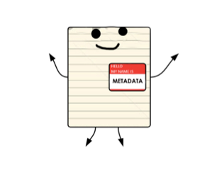
Designing for Shaq, Will Smith & Muhammad Ali — and why he joined SOLIDWORKS / D2M.
Engineering Systems Administrator at Knapheide — engineering spotlight interview.
Sr. Product Manager, 3DEXPERIENCE & mechanical design tools — 20+ years of SOLIDWORKS.
Engineer Q&A turned into a readable spotlight for Hawk Ridge Systems.
Physical signals for honest connection in public — prototypes and field notes outside client work.
Personal writing and visual work — Visual Archive, garden and health threads, tech essays, and a Grok signal report. Plus the experiments that sit next to professional craft.
Quails Roost builds, house-to-house plant history, indoor splits, Hotdog the garden cat, potatoes-in-tunnels plans.
FSD nags, Reddit as knowledge mining, mind viruses vs memes, matchmaker-as-public-good, space time capsules.
Notes on companionship, values match tests, dating market prompts, free public-good matchmaker ideas.
Energy recovery notes, NTN workout logs, paleo grocery loop — strength, protein, one cheat meal.
Year-on-the-wire report — product mix, Build projects, monthly chat volume, and interesting questions. 1,584 conversations · 13,655 questions · Apr 2025 → Jun 2026. Sort-of-anonymous-but-not-really-also-who-cares.
Quiet writing on content strategy, manufacturing, AI, resilience, rural life, and living between systems and soil.
Finished work with durable archives on this site — original editions, fake newspaper ads, and SME interviews.
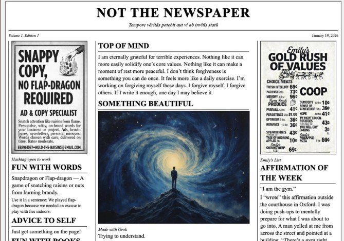
Engineers, programmers, PMs, and customers — shop-floor and design knowledge turned into readable stories for Hawk Ridge Systems.
I’m open to conversations about the weird world we live in — content systems and DAM, manufacturing stories and shop-floor proof, AI that actually helps writers and engineers and everyone, tacit knowledge and oral history, rural life on the land, resilience after hard seasons, brand voice that stays human, archives that don’t rot, and the half-built experiments that live between serious work and play. Want to talk? Reach out: notemily669+BCE@gmail.com.
If it’s specific, strange, useful, and honest — I’m listening.